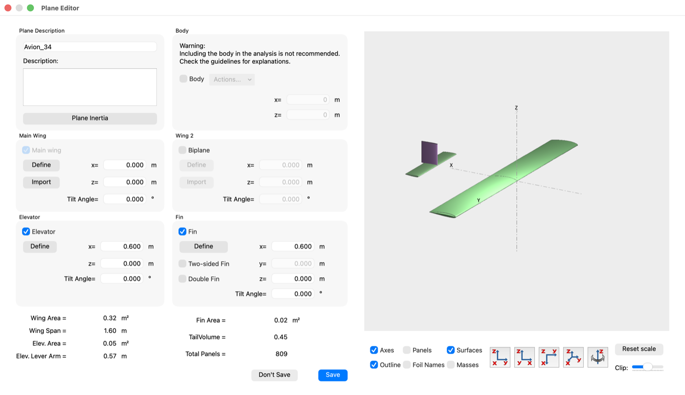
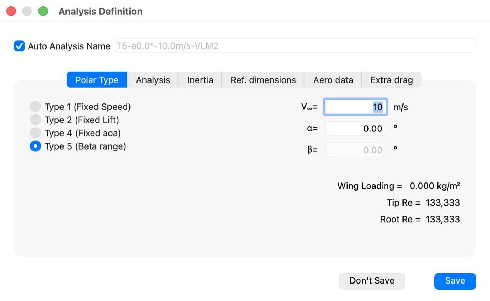
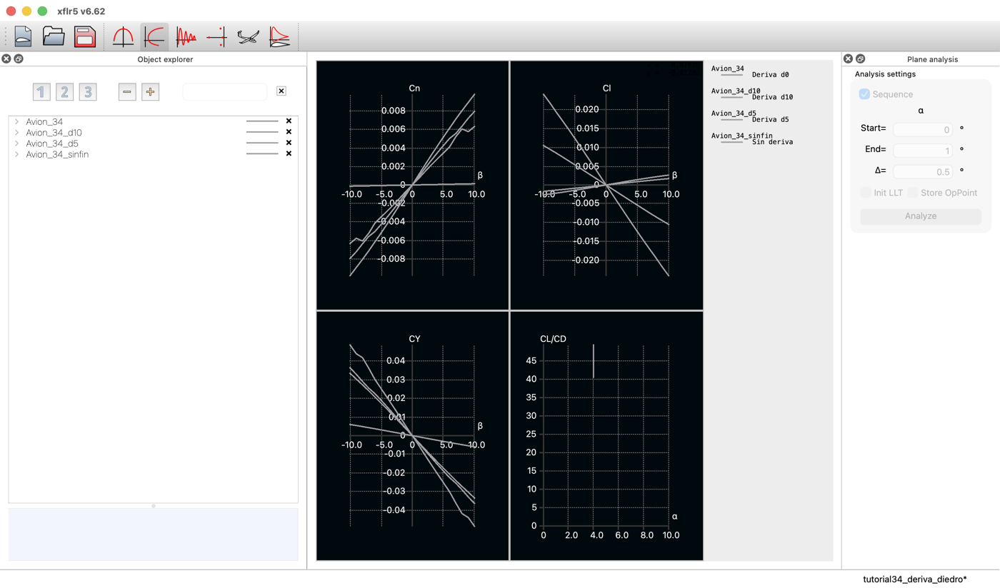
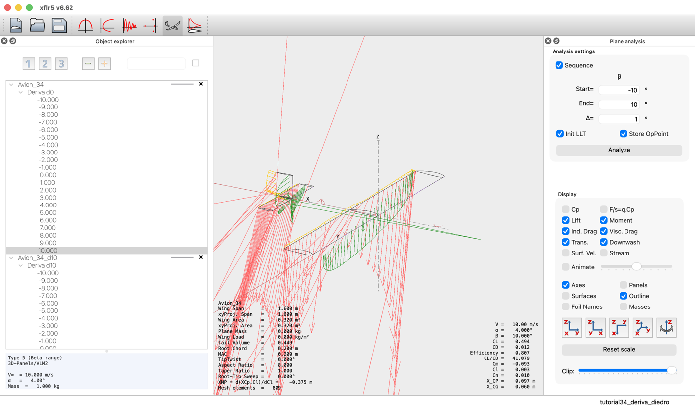

A disturbed aircraft that yaws must return to its heading, and one that drops a wing must pick it up again. Two derivatives decide both, the fin looks after one and the dihedral after the other, and each is paid for with the other.
XFLR5 · Tutorial 3.4
Estabilidad estática lateral y direccional
Un avión que guiña debe volver a su rumbo, y uno que baja un ala debe levantarla. Dos derivadas deciden ambas cosas, la deriva se ocupa de una y el diedro de la otra, y cada una se paga con la contraria.
XFLR5 · Tutorial 3.4
Statische Quer- und Richtungsstabilität
Ein gestörtes Flugzeug muss nach einem Gieren auf seinen Kurs zurückkehren, und nach einem Absacken einer Fläche muss es diese wieder heben. Zwei Ableitungen entscheiden darüber: das Seitenleitwerk sorgt für die eine, die V-Stellung für die andere, und jede wird mit der anderen bezahlt.
Estimated reading: 45 minLectura estimada: 45 minLesedauer: ca. 45 minLevel: undergraduateNivel: licenciaturaNiveau: BachelorVerified on XFLR5 v6.62Verificado en XFLR5 v6.62Geprüft mit XFLR5 v6.62
Full English translation in preparation. Each section below carries a summary of its content; the complete text, figures and tables are available in the Spanish version, which the ES button above selects.
Tell the two lateral stabilities apart and write each as the sign of a derivative; add a fin and size it with its vertical tail volume; define a Type 5 sideslip analysis; read Cn and Cl against beta in the program; and measure by difference how much the fin and the dihedral each contribute. In the series syllabus this tutorial follows 3.1 and 3.2, not yet published, so it carries the minimum of both.
About the program version. The XFLR5 project was closed on 30 June 2026: version 6.62, on which this guide was verified, is the final release. Development continues in flow5, presented as version 7 of XFLR5 and open source since 1 January 2026. The series stays with XFLR5 for two reasons: a frozen program keeps these instructions valid, and XFLR5 was developed for model-scale aircraft, which is the scale of the examples. Version 6.62 for Windows and macOS remains available on SourceForge.
The physics
Sideslip, yaw and roll
A gust from the side gives the aircraft a sideslip angle beta. Two independent things may follow: it may yaw, governed by Cn, and it may roll, governed by Cl. Directional stability asks for Cn_beta > 0 and roll stability for Cl_beta < 0. The signs differ because in both cases the moment must oppose the disturbance, and the two disturbances have opposite senses. The fin looks after the first, the wing dihedral after the second.
Scope and limits
What this analysis measures and what it does not
The same inviscid VLM2 analysis as Tutorial 3.3, now with sideslip and one more surface. It measures the three sideslip derivatives at the angle of attack declared, and the separate contributions of fin and dihedral. It does not include the fuselage, which destabilises in yaw, nor stall, nor the time response.
Orientation
Where the fin and the sideslip live
Everything happens in Wing and Plane Design. The fin is enabled with a checkbox in the plane editor, and XFLR5 edits it in the same Wing Edition window as the wing — which is why it reports a span of 0.30 m for a fin 0.150 m tall: it assumes a symmetric surface. The area, 0.018 m², is the real one.
Step 1
Add the fin to the aircraft
The aircraft of Tutorial 3.3 with a fin added: rectangular, NACA 0009, 0.150 m tall and 0.120 m in chord, its leading edge at x = 0.600 m like the tailplane. Its size is judged by the vertical tail volume, V_v = S_v l_v / (S b) = 0.0200, which the program does not report: the TailVolume box is the horizontal one.
Step 2
The sideslip analysis
Type 5 (Beta range) sweeps sideslip with the angle of attack held fixed: selecting it enables the alpha field and greys out beta, the reverse of a Type 1. The program also switches the method to VLM2 by itself and disables both LLT and VLM1, which carries the label (No sideslip). Mass and centre of gravity are declared per analysis, as in 3.3.
Step 3
Reading Cn and Cl against beta
The four default graphs plot against alpha, which in a sideslip polar is fixed: every curve collapses to a vertical line. The axes have to be changed to Cn and Cl against beta, one graph at a time. Both curves pass through the origin and are odd in beta, which is the symmetry check. The derivatives are least-squares slopes fitted within |beta| <= 5 degrees, and the interval is declared.
Step 4
How much the fin contributes
Comparing the aircraft with and without the fin isolates its share. Without it, Cn_beta = +0.0008 per radian and the aircraft is indifferent in yaw; with it, +0.0594. The fin supplies 99 % of the directional stability, and 82 % of the side force, because it works with the whole tail arm.
Step 5
The dihedral and the rolling moment
With no dihedral the aircraft is unstable in roll: Cl_beta = +0.0163 per radian. Raising the wing tips changes that, and almost perfectly linearly: -0.0155 per radian and per degree of dihedral, so a little over one degree is enough to reach neutrality. The dihedral column lives in the wing section table, and each variant is a duplicated plane because editing geometry discards the polars.
Step 6
What the dihedral costs in yaw
The dihedral is not free. With the fin unchanged, Cn_beta falls from +0.0594 with no dihedral to +0.0397 with ten degrees: a third of the directional stability the fin bought. Lateral design is a trade between two parts that get in each other's way, and the fine balance belongs to dynamic stability. These figures are optimistic, too, because the model carries no fuselage.
Suggested practice
How much fin does it take
Suggested practice, not an assignment: change the fin height to 0.100 m and 0.200 m, obtain the vertical tail volume and both derivatives for each, and work out how much dihedral would bring Cl_beta to -0.05 per radian.
Key values
Four statements and two relations
Directional stability is Cn_beta > 0 and roll stability Cl_beta < 0; the fin supplies almost all of the first and the dihedral all of the second, at -0.0155 per radian per degree; and every degree of dihedral costs directional stability. The vertical tail volume of this aircraft is 0.0200.
Common mistakes
Mistakes that invalidate a lateral study
Reading a graph by its printed axis label after changing the variables; confusing CL with Cl in the variable list; leaving VLM1 selected for a sideslip analysis; reading the sign of Cl_beta as if it were Cn_beta; taking these figures for an aircraft with a fuselage; reading the neutral point in a Type 5 run; and fitting the slope over the whole sweep.
Sources
References
Etkin and Reid, Nelson, Anderson, and the XFLR5 guidelines. Screenshots from XFLR5 v6.62 on macOS; the numbers come from four exported Type 5 polars fitted by least squares, and the project with the four aircraft accompanies the guide.
Objetivos de aprendizaje
Qué se debe poder hacer al terminar
El Tutorial 3.3 dejó un avión que vuelve solo a su ángulo de ataque. Eso resuelve la mitad del problema: falta que, al recibir una ráfaga de costado, vuelva también a su rumbo y mantenga las alas niveladas. Al terminar esta guía debe ser posible:
Distinguir las dos estabilidades que gobierna el derrape —la direccional y la de balanceo— y escribirlas como el signo de dos derivadas.
Añadir una deriva al avión y dimensionarla con su volumen de cola vertical.
Definir un análisis Type 5 (Beta range), que barre el derrape con el ángulo de ataque fijo, y saber por qué ese análisis no admite todos los métodos.
Leer \(C_n\) y \(C_l\) contra \(\beta\) en el programa, cambiando las variables de las gráficas, y medir sobre ellas las dos derivadas.
Medir por diferencia cuánto aporta la deriva y cuánto el diedro, y reconocer que cada uno se paga con el otro.
Una nota sobre el orden. En el temario de la serie este tutorial va después del 3.1 —estabilizador, deriva, masas y centro de gravedad— y del 3.2 —el fuselaje—, que todavía no están publicados. Para que la guía se sostenga sola, incluye lo mínimo de ambos: cómo añadir la deriva y dónde se declara el centro de gravedad. El avión de partida es el del Tutorial 3.3, sin cambios.
La física
Derrape, guiñada y balanceo
Un avión en vuelo recto recibe una ráfaga de costado. La corriente deja de venirle de frente y le llega con un ángulo de derrape \(\beta\), medido entre el plano de simetría y la velocidad. A partir de ahí, dos cosas pueden ocurrir, y son independientes entre sí.
La primera es que el avión guiñe: que el morro gire hacia el viento o se aparte de él. Lo decide el momento de guiñada, cuyo coeficiente es \(C_n\). Si al aparecer un derrape positivo surge un momento que lleva el morro hacia esa corriente, el avión se alinea solo y es direccionalmente estable:
La segunda es que el avión balancee: que una de las dos alas baje. Lo decide el momento de balanceo, \(C_l\). Aquí la condición tiene el signo contrario, y conviene razonarla despacio porque es la que más se equivoca:
El razonamiento es este. Si el avión baja el ala derecha, resbala hacia ese lado y aparece un derrape positivo. Para que se enderece hace falta un momento que levante esa ala, es decir, de signo contrario al derrape que lo provocó. De ahí que la derivada tenga que ser negativa: no es una convención arbitraria, es la condición de que el momento se oponga a la perturbación.
Las dos no se resuelven con la misma pieza. De la guiñada se ocupa la deriva, que es una superficie vertical muy por detrás del centro de gravedad: al aparecer derrape recibe una fuerza lateral y, con el brazo que tiene, un momento que alinea el morro. Del balanceo se ocupa el diedro del ala: con derrape, el ala que avanza contra la corriente recibe un ángulo de ataque efectivo mayor que la otra, sustenta más, y el avión rueda hacia el lado contrario al resbalón. Este tutorial mide las dos contribuciones por separado.
Hay una tercera magnitud que conviene mirar aunque no sea una condición de estabilidad: la fuerza lateral, \(C_Y\). Su derivada \(C_{Y\beta}\) es negativa en cualquier avión razonable —la corriente lateral empuja al avión hacia el lado del que viene— y sirve de control: si sale positiva, algo está mal planteado.
Alcance y límites
Qué mide este análisis y qué no mide
El análisis es el mismo VLM2 no viscoso del Tutorial 3.3, ahora con derrape y con una superficie más. Conviene delimitar qué se puede concluir de él.
Lo que mide
Lo que no mide
Las pendientes \(C_{n\beta}\), \(C_{l\beta}\) y \(C_{Y\beta}\) en el ángulo de ataque que se declare
El fuselaje, que XFLR5 desaconseja incluir y que desestabiliza en guiñada
La contribución de la deriva y la del diedro, por separado
El arrastre de perfil: el cálculo es no viscoso
El reparto entre ambas y lo que cada una le cuesta a la otra
La pérdida: VLM2 es lineal, y los valores valen en el tramo recto
La simetría del modelo, porque barre \(\beta\) hacia los dos lados
La respuesta en el tiempo: el balanceo holandés y la espiral son dinámica
Tabla 1.Alcance del estudio. La columna de la derecha no es una lista de defectos: son las decisiones que permiten aislar la estabilidad estática lateral, y cada una hay que declararla al reportar un resultado.
Tres decisiones merecen una línea. La primera: los coeficientes de un cálculo no viscoso no dependen de la velocidad, de modo que los 10 m/s del análisis son un rótulo; se eligieron porque son del orden de la velocidad de trimado que midió el Tutorial 3.3. La segunda: el ángulo de ataque queda fijo en \(4^\circ\), que es el del vuelo trimado con el estabilizador a \(-3^\circ\), y las derivadas que se obtienen valen para esa condición de vuelo y no para todas. La tercera: el centro de gravedad se declara en cada análisis, en \(x_{CG} = 0.060\) m, el mismo del 3.3, porque los momentos se calculan respecto de ese punto.
Sin fuselaje, la estabilidad direccional sale optimista. Un fuselaje real es una superficie lateral por delante del centro de gravedad y su contribución a \(C_{n\beta}\) es desestabilizadora: la deriva tiene que compensarla además de aportar el margen. Este modelo no lo incluye —XFLR5 desaconseja meter el fuselaje en el análisis, y el Tutorial 3.2 lo medirá—, de modo que las cifras de aquí son el límite superior de lo que da esta cola.
Orientación
Dónde están la deriva y el derrape
Todo ocurre en el módulo Wing and Plane Design, el del Tutorial 3.3. Hay dos novedades: la deriva se activa en el editor del avión, y el derrape aparece al elegir un tipo de análisis que hasta ahora no se había usado.

Figura 1.El editor del avión, con la deriva activada. La casilla Fin habilita el bloque de la derecha: su botón Define, la posición en \(x\) y las opciones Two-sided Fin y Double Fin. Abajo, el resumen confirma Fin Area = 0.02 m²; TailVolume = 0.45 es el volumen de cola horizontal y no cambia al añadir la deriva.
El editor de la deriva es el mismo del ala. XFLR5 no tiene un editor propio para superficies verticales: abre Wing Edition, con la misma tabla de secciones. Conviene saberlo porque lo que ahí se llama envergadura es, para una deriva, su altura.
Y por eso reporta el doble de lo que mide. Con la deriva de esta guía —0.150 m de altura— el panel derecho del editor anuncia Wing Span 0.30 m: duplica la altura, porque el editor supone una superficie simétrica respecto del plano central. El área, en cambio, sí es la de una sola cara, 0.018 m². El alargamiento que muestra, 5.00, sale de la envergadura duplicada. Al dimensionar la deriva hay que usar el área y la altura reales, no la cifra de envergadura.
Paso 1
Añadir la deriva al avión
El avión de partida es el del Tutorial 3.3: el ala del 2.1 más un estabilizador rectangular de NACA 0009. Se le añade la deriva.
Plane ▸ Define a New Plane, o bien Plane ▸ Current Plane ▸ Edit sobre el avión del 3.3.
Marcar la casilla Fin. El bloque de la derecha se habilita y aparece el botón Define de la deriva.
Llevar su posición a \(x = 0.600\) m, la misma del estabilizador: el programa la propone en 0.650 m.
Define: dos secciones de cuerda 0.120 m, la segunda a 0.150 m de altura, sin desplazamiento, con NACA 0009 en ambas.
Comprobar en el editor del avión que aparece Fin Area = 0.02 m² y que Total Panels sube a 809.
La deriva que propone el programa no sirve tal cual: trae flecha de 14° y estrechamiento de 0.60. Se sustituye por una rectangular, por la misma razón que en el 3.3 se rehízo el estabilizador: para que su contribución sea fácil de razonar y de comparar.
Ala
Estabilizador
Deriva
Perfil
NACA 2412
NACA 0009
NACA 0009
Envergadura o altura
1.600 m
0.500 m
0.150 m
Cuerda
0.200 m
0.100 m
0.120 m
Superficie
0.320 m²
0.050 m²
0.018 m²
Borde de ataque
\(x = 0\)
\(x = 0.600\) m
\(x = 0.600\) m
Paneles VLM
494
266
49
Tabla 2.El avión del tutorial. El ala y el estabilizador son los del Tutorial 3.3, sin tocar; la deriva es lo nuevo. El volumen de cola vertical no lo reporta el programa y se calcula aparte: \(V_v = S_v\,l_v/(S\,b) = 0.018 \cdot 0.570/(0.320 \cdot 1.600) = 0.0200\).
Cuánta deriva es «suficiente»
La medida que ordena esta decisión es el volumen de cola vertical, que compara el momento que puede dar la deriva con el tamaño del ala:
\[ V_v \;=\; \frac{S_v\,l_v}{S\,b} \]
con \(S_v\) el área de la deriva, \(l_v\) la distancia del centro de gravedad a su cuarto de cuerda, y \(S\) y \(b\) la superficie y la envergadura del ala. Para esta deriva, \(V_v = 0.018 \cdot 0.570/(0.320 \cdot 1.600) = 0.0200\), que está en el orden de lo habitual en un planeador o un modelo. Es el equivalente del volumen de cola horizontal del 3.3, que ahí valía 0.45.
El programa no reporta el volumen de cola vertical. El recuadro del editor muestra TailVolume, y ése es el horizontal: con esta deriva sigue valiendo 0.45, porque sólo depende del estabilizador. El vertical hay que calcularlo a mano con la fórmula de arriba.
Paso 2
El análisis con derrape
Hasta aquí la serie ha usado tres tipos de análisis: el Type 1 de velocidad fija del 2.1 y el 3.3, y el Type 7 de estabilidad con el que se trimó el avión. El derrape necesita uno nuevo.

Figura 2.El análisis de derrape. Con Type 5 (Beta range) marcado, el campo \(\alpha\) queda activo y el de \(\beta\) en gris: el ángulo de ataque es el dato fijo y el derrape es lo que se barre. El nombre automático pasa a T5-a4.0°-10.0m/s-VLM2, porque el programa cambia el método por su cuenta.
Analysis ▸ Define an Analysis. Pestaña Polar Type: marcar Type 5 (Beta range).
Escribir la velocidad, 10 m/s, y el ángulo de ataque, \(4^\circ\), que es el dato que queda fijo.
Pestaña Analysis: desmarcar Viscous, que viene marcada, y dejar Ring vortex (VLM2).
Pestaña Inertia: desmarcar Use plane inertia y escribir 1.000 kg y \(x_{CG} = 0.060\) m.
Desmarcar Auto Analysis Name y ponerle un nombre propio, para distinguir las variantes en el explorador.
Al marcar Type 5 ocurren dos cosas que conviene mirar. La primera: el campo \(\alpha\) se habilita y el de \(\beta\) se apaga. Es lo contrario de lo que pasa en un Type 1, donde \(\beta\) es un derrape fijo que se puede declarar. El tipo de polar decide cuál de los dos ángulos es el dato y cuál el barrido.
El programa cambia el método por su cuenta. El nombre automático pasa a T5-a4.0°-10.0m/s-VLM2: al elegir Type 5, XFLR5 selecciona VLM2 y deshabilita tanto LLT (Wing only) como Horseshoe vortex (VLM1), que aparece con la etiqueta (No sideslip) al lado. No es una advertencia que se pueda ignorar: el método de herradura del Tutorial 2.1 no puede representar el derrape, y el programa no deja elegirlo.
El barrido se define en el panel de la derecha, que ahora pide \(\beta\) en vez de \(\alpha\). Para esta guía, de \(-10^\circ\) a \(10^\circ\) cada grado: el intervalo simétrico permite comprobar que los coeficientes son impares en \(\beta\), que es la verificación de que el modelo es simétrico. La corrida entera toma un par de segundos.
Paso 3
Leer Cn y Cl contra β
La corrida termina y la vista de polares no muestra nada útil. No es un fallo: es que las cuatro gráficas siguen dibujando lo de siempre —\(C_L\) contra \(C_D\), y tres magnitudes contra \(\alpha\)—, y en un análisis Type 5 el ángulo de ataque no varía. Cada curva se reduce a una raya vertical en \(\alpha = 4^\circ\).
Hay que cambiarle los ejes a las gráficas. Se abre Graphs ▸ All Graph Settings, pestaña Variables: son dos listas idénticas, YAxis y XAxis. Para la primera gráfica, Cn contra β; para la segunda, Cl contra β. El ajuste se aplica a la gráfica activa, de modo que hay que repetirlo gráfica por gráfica.
En esa lista, CL y Cl no son lo mismo y están a dos renglones de distancia.CL es la sustentación del avión; Cl, el momento de balanceo. Junto a Cn aparecen además Cn_viscous y Cn_induced. Elegir mal no da ningún error: da una gráfica plausible de otra magnitud, y todo el análisis posterior queda mal sin que nada avise.
El rótulo del eje puede quedarse viejo. Al aceptar el diálogo, la gráfica pasa a dibujar las curvas correctas —los números del eje horizontal cambian a \(-10\)…\(10\)—, pero el rótulo puede seguir diciendo CL y CD durante el resto de la sesión; salir a la vista 3D y volver no lo arregla. El rótulo se corrige cuando la gráfica se construye de nuevo, al reabrir el programa. Mientras tanto, hay que fiarse de las variables que se eligieron y no de lo que está impreso en el eje, y no publicar una figura sin comprobarlo.

Figura 3.Las dos derivadas, en el programa. Las cuatro configuraciones superpuestas tras cambiar las variables de los ejes. Ambas curvas pasan por el origen y son impares en \(\beta\). Los ejes de esta captura están bien rotulados porque las variables se fijaron antes de abrir el programa; si se cambian con el programa abierto, el rótulo puede quedarse en CL y CD hasta la sesión siguiente.
Con los ejes puestos, las dos gráficas dicen lo que se buscaba. Ambas pasan por el origen, porque un avión simétrico sin derrape no tiene ni momento de guiñada ni de balanceo, y ambas son impares en \(\beta\): derrapar hacia un lado da exactamente lo contrario que derrapar hacia el otro. Esa simetría es la primera comprobación de que el modelo está bien planteado —en las corridas de esta guía se cumple hasta la última cifra— y es la razón de barrer \(\beta\) hacia los dos lados en vez de sólo hacia uno.
Medir la pendiente en el origen
Las derivadas se miden como pendientes en el origen. Ajustando por mínimos cuadrados en \(|\beta| \le 5^\circ\) sobre las polares exportadas con Polars ▸ Current Polar ▸ Export results:
Configuración
\(C_{Y\beta}\) (rad⁻¹)
\(C_{l\beta}\) (rad⁻¹)
\(C_{n\beta}\) (rad⁻¹)
Veredicto
Sin deriva, sin diedro
-0.0352
+0.0100
+0.0008
Indiferente en guiñada, inestable en balanceo
Con deriva, diedro 0°
-0.1998
+0.0163
+0.0594
Direccionalmente estable; sigue inestable en balanceo
Con deriva, diedro 5°
-0.2171
-0.0611
+0.0489
Estable en ambos
Con deriva, diedro 10°
-0.2880
-0.1413
+0.0397
Estable en ambos, con menos guiñada
Tabla 3.Las tres derivadas de derrape, en cuatro configuraciones. Todas a \(\alpha = 4^\circ\), \(V_\infty = 10\) m/s, \(x_{CG} = 0.060\) m, VLM2 no viscoso, con el ajuste por mínimos cuadrados en \(|\beta| \le 5^\circ\). El signo es lo que hay que leer: \(C_{n\beta} > 0\) es estabilidad direccional y \(C_{l\beta} < 0\) es estabilidad de balanceo.
Declarar el intervalo del ajuste, como siempre en esta serie. Entre \(|\beta| \le 3^\circ\) y \(|\beta| \le 5^\circ\) las derivadas cambian un 1.5 % o menos, así que la cifra es robusta; con todo el barrido hasta \(10^\circ\) se mueven hasta un 6 %. La corrida de 10° de diedro tiene además un rizo local en \(C_n\) cerca de \(\beta = \pm 8^\circ\), que queda fuera del intervalo de ajuste y por eso no contamina el resultado.
Paso 4
Cuánto aporta la deriva
La tabla 3 tiene una fila que no es una variante del avión sino un experimento: la misma aeronave sin deriva. Compararla con el caso de diedro nulo aísla lo que aporta esa superficie, porque entre las dos no cambia nada más.
Figura 4.El momento de guiñada contra el derrape. Las cuatro configuraciones, todas a \(\alpha = 4^\circ\). La pendiente en el origen es \(C_{n\beta}\): positiva devuelve el morro al viento. Sin deriva la recta es casi horizontal —el avión no sabe volver—; con ella, la pendiente se multiplica por casi ochenta. El diedro la reduce, y en la corrida de 10° se ve además un rizo cerca de \(\beta = \pm 8^\circ\), fuera del intervalo de ajuste.
El resultado no admite matices. Sin deriva, \(C_{n\beta} = +0.0008\) por radián: la recta es prácticamente horizontal y el avión es indiferente en guiñada —ni vuelve al rumbo ni se aparta más—. Con la deriva puesta pasa a \(+0.0594\), casi ochenta veces más.
La deriva aporta \(\Delta C_{n\beta} = +0.0587\) de los \(+0.0594\) del avión completo: el 99 % de su estabilidad direccional. El ala y el estabilizador, por sí solos, no saben volver al rumbo.
Por qué el ala no contribuye
Conviene detenerse en por qué el ala no contribuye. En guiñada, el ala derecha y la izquierda avanzan a velocidades ligeramente distintas y con flechas efectivas distintas, y en un ala recta y sin torsión esos dos efectos son pequeños y casi se cancelan. La deriva, en cambio, es una superficie vertical entera trabajando con un brazo de más de medio metro: su fuerza lateral multiplicada por ese brazo es todo el momento restaurador.
Contribución
\(\Delta C_{n\beta}\)
\(\Delta C_{l\beta}\)
Qué significa
La deriva (diferencia con y sin)
+0.0587
+0.0063
Casi toda la estabilidad direccional del avión: el 99 % de \(C_{n\beta}\)
El diedro, por grado (ajuste 0°–10°)
-0.00197
-0.01575
Toda la estabilidad de balanceo, y se paga con estabilidad direccional
Tabla 4.Quién aporta cada estabilidad. Las dos contribuciones se obtienen por diferencia entre configuraciones, que es lo que permite atribuirlas: la deriva comparando con y sin ella a diedro nulo, y el diedro comparando 0°, 5° y 10° con la deriva puesta.
Una cifra de esa tabla que no queda explicada. La deriva aporta también \(\Delta C_{l\beta} = +0.0063\), es decir, empeora un poco el balanceo. Para una deriva por encima del centro de gravedad, el razonamiento de libro predice lo contrario: su fuerza lateral, aplicada arriba, debería levantar el ala que baja. La cifra está medida y es pequeña —el diedro la borra con menos de medio grado—, pero no se determinó a qué se debe, y por eso se deja anotada en vez de explicada. Comprobarlo pide mover la deriva en altura y volver a medir.
La fuerza lateral cuenta la misma historia desde otro lado: \(C_{Y\beta}\) pasa de \(-0.0352\) a \(-0.1998\). El 82 % de la fuerza lateral del avión la genera la deriva; lo que la distingue del resto es que la genera lejos del centro de gravedad.
Paso 5
El diedro y el momento de balanceo
Con la deriva puesta, el avión vuelve al rumbo. Pero mírese la columna de \(C_{l\beta}\) de la tabla 3: con diedro nulo vale \(+0.0163\), y positivo es inestable. Ese avión, al resbalar, tiende a hundir más el ala que ya venía bajando.
Figura 5.El momento de balanceo contra el derrape. La pendiente en el origen es \(C_{l\beta}\), y aquí el signo es el que importa: negativo levanta el ala que bajó. Sin diedro sale positiva —el avión tiende a seguir cayendo— y basta un diedro de 5° para cambiarle el signo.
El remedio es geométrico y cuesta muy poco: levantar las puntas del ala. Con derrape, el ala que queda contra la corriente presenta un ángulo de ataque efectivo mayor que la otra —la componente lateral de la velocidad le llega por debajo— y sustenta más, de modo que aparece un momento que levanta el ala baja. Cuanto mayor el diedro, mayor esa diferencia.
Cuánto diedro hace falta
Las tres corridas lo miden. Con 5° de diedro, \(C_{l\beta}\) pasa a \(-0.0611\); con 10°, a \(-0.1413\). Entre los dos casos la relación es casi perfectamente lineal:
El diedro mueve \(C_{l\beta}\) en \(-0.0155\) por radián y por grado de diedro: \(-0.01547\) medido con 5° y \(-0.01575\) con 10°. Basta poco más de un grado de diedro —1.03°, con la tasa medida— para llevar a cero la inestabilidad de partida.
De ahí que casi todo avión de ala baja lleve diedro visible, y que un planeador de ala alta necesite menos: la posición del ala respecto del fuselaje aporta por su cuenta un efecto del mismo signo, que este modelo sin fuselaje no puede ver.
Cómo se cambia en el programa. El diedro es una columna de la tabla de secciones del ala, dihedral(°), y se escribe en la fila de la raíz: se aplica al tramo que va de esa sección a la siguiente. Como tocar la geometría invalida las polares ya calculadas, cada variante de esta guía es un avión propio, duplicado con Plane ▸ Current Plane ▸ Duplicate. El editor confirma el cambio en la envergadura proyectada: 1.60 m con diedro nulo, 1.59 m con 5° y 1.58 m con 10°.
Paso 6
Lo que el diedro cuesta en guiñada
Queda la parte que un tutorial honesto no puede omitir: el diedro no sale gratis. Recórrase otra vez la tabla 3, ahora por la columna de \(C_{n\beta}\).
Con la deriva fija, \(C_{n\beta}\) baja de \(+0.0594\) sin diedro a \(+0.0489\) con 5° y a \(+0.0397\) con 10°. Diez grados de diedro se llevan un tercio de la estabilidad direccional que costó poner la deriva.
La explicación más simple es geométrica: al levantar las puntas, el ala deja de estar en un plano horizontal y presenta superficie al flujo lateral, con parte de su sustentación inclinada, y esa contribución actúa cerca del centro de gravedad. Es una interpretación razonable de lo medido, no algo que estas corridas separen: para atribuirla habría que aislar la fuerza lateral del ala de la de la cola, y el análisis sólo reporta los coeficientes del conjunto.
Dónde se decide el reparto
El diseño lateral de un avión es, por eso, un reparto entre dos piezas que se estorban: la deriva pone la estabilidad direccional y el diedro la de balanceo, pero cada grado de diedro obliga a algo más de deriva. Esta guía se detiene en la estática; el equilibrio fino entre las dos —demasiado diedro y poca deriva da un balanceo holandés incómodo, y lo contrario una espiral divergente— se decide en la estabilidad dinámica, que es una continuación de esta serie.
Y estas cifras son optimistas. El modelo no incluye fuselaje. Un fuselaje real es superficie lateral repartida a lo largo del avión, buena parte por delante del centro de gravedad, y su contribución a \(C_{n\beta}\) es desestabilizadora: la deriva de un avión completo tiene que ser mayor que la que aquí basta. El Tutorial 3.2 medirá ese efecto en lugar de citarlo.
Práctica sugerida
Cuánta deriva hace falta
Esta práctica no se entrega. Sirve para comprobar que el reparto entre la deriva y el diedro se entendió, y para medir cuánto de cada uno hace falta en un avión concreto.
Enunciado. Partiendo del avión de esta guía, cambiar la altura de la deriva a 0.100 m y a 0.200 m, sin mover su borde de ataque ni su cuerda. Para cada variante, obtener el volumen de cola vertical, \(C_{n\beta}\) y \(C_{l\beta}\), y determinar cuánto diedro haría falta para que \(C_{l\beta}\) valga \(-0.05\) por radián.
Condiciones. Las del tutorial: VLM2 no viscoso, \(\alpha = 4^\circ\), \(V_\infty = 10\) m/s, 1.000 kg, \(x_{CG} = 0.060\) m, \(\beta\) de \(-10^\circ\) a \(10^\circ\) cada grado, con el ajuste en \(|\beta| \le 5^\circ\).
El procedimiento, en corto
Plane ▸ Current Plane ▸ Duplicate y un nombre propio para cada variante: tocar la geometría de un avión con polares las invalida.
Plane ▸ Current Plane ▸ Edit fin y cambiar la altura en la segunda sección.
Anotar del editor el área de la deriva y calcular \(V_v = S_v\,l_v/(S\,b)\).
Definir el análisis Type 5, ejecutarlo y exportar la polar con Polars ▸ Current Polar ▸ Export results.
Ajustar las pendientes en \(|\beta| \le 5^\circ\).
Registro de resultados
Altura de la deriva
\(S_v\) (m²)
\(V_v\)
\(C_{n\beta}\) (rad⁻¹)
\(C_{l\beta}\) (rad⁻¹)
0.100 m
0.012
0.150 m (esta guía)
0.018
0.0200
+0.0594
+0.0163
0.200 m
0.024
Tabla 5.Plantilla de registro de la práctica. La fila de esta guía está llena para poder contrastar. Las otras se llenan con la misma receta: una copia del avión por variante, su polar Type 5 y el ajuste en \(|\beta| \le 5^\circ\).
Preguntas que orientan la lectura
¿Crece \(C_{n\beta}\) en proporción al volumen de cola vertical, o se satura? Compárese con lo que ocurría en el Tutorial 3.3 al agrandar el estabilizador.
¿Cambia \(C_{l\beta}\) al agrandar la deriva? Razónese antes de correr el análisis: ¿dónde actúa esa fuerza lateral respecto del centro de gravedad?
Con la deriva más pequeña, ¿sigue siendo el 99 % de la estabilidad direccional, o el ala empieza a contar?
Si el avión llevara fuselaje, ¿en qué dirección se moverían estas cifras? ¿Y cuál de las dos derivadas se vería más afectada?
Con un grado escaso de diedro, \(C_{l\beta}\) queda en cero. ¿Es eso un buen diseño? Razónese con lo que ocurre ante una ráfaga, no con el signo.
Puntos clave
Cuatro afirmaciones y dos relaciones
Lo que hay que retener de esta guía cabe en cuatro afirmaciones.
Una. La estabilidad direccional es \(C_{n\beta} > 0\) y la de balanceo es \(C_{l\beta} < 0\): los signos son contrarios porque en ambos casos el momento debe oponerse a la perturbación. Dos. La deriva pone casi toda la primera: el 99 % en este avión. Tres. El diedro pone toda la segunda, a razón de \(-0.0155\) por radián y por grado de diedro. Cuatro. Cada grado de diedro cuesta estabilidad direccional: diez grados se llevan un tercio de la que puso la deriva.
Y dos relaciones, las dos comprobadas con las corridas de esta guía:
El volumen de cola vertical de este avión, \(V_v = 0.0200\), es la cifra que resume cuánta deriva lleva, igual que el 0.45 del volumen horizontal resumía cuánto estabilizador. Las dos se calculan a mano: el programa sólo reporta la segunda.

Figura 6.El avión derrapando, visto en tres dimensiones. Punto de operación de \(\beta = 10^\circ\): la corriente llega de costado y la deriva aparece cargada. El recuadro da Cl = 0.003 y Cn = 0.010, que son los valores de la polar exportada. XNP marca aquí \(-0.375\) m y no significa nada: el punto neutro se obtiene derivando respecto del ángulo de ataque, que en este análisis no varía.
Errores frecuentes
Errores que invalidan un estudio lateral
Como en el resto de la serie, éstos no son errores de manejo sino de interpretación.
Leer la gráfica por su rótulo. Resulta verosímil porque el rótulo está impreso en el eje. Cambiadas las variables con el programa abierto, XFLR5 puede seguir rotulando CL y CD el resto de la sesión aunque dibuje \(C_n\) contra \(\beta\). Hay que fiarse de lo que se eligió en Variables, y decirlo en el pie de cualquier figura que se publique.
Confundir CL con Cl en la lista de variables. Resulta verosímil porque están a dos renglones y sólo cambia una mayúscula. La primera es la sustentación del avión; la segunda, el momento de balanceo. El programa no protesta: dibuja una curva plausible de otra magnitud.
Pedir un análisis con derrape y dejar el método del Tutorial 2.1. Resulta verosímil porque VLM1 fue suficiente hasta ahora. Con Type 5 el programa lo deshabilita y lo rotula (No sideslip): el método de herradura no representa el derrape, y el análisis se corre en VLM2.
Interpretar el signo de \(C_{l\beta}\) como el de \(C_{n\beta}\). Resulta verosímil porque ambas son «estabilidad». Positiva es estable en guiñada y inestable en balanceo: el criterio es que el momento se oponga a la perturbación, y las dos perturbaciones tienen signos contrarios.
Dar por buenas estas cifras para un avión con fuselaje. Resulta verosímil porque el modelo es el mismo. El fuselaje desestabiliza en guiñada, y la deriva de un avión completo tiene que ser mayor que la que aquí basta.
Leer el punto neutro en la vista 3D de un análisis Type 5. Resulta verosímil porque el recuadro lo muestra igual que siempre. Se obtiene derivando respecto del ángulo de ataque, que en este análisis está fijo: el valor que aparece no significa nada.
Ajustar la pendiente con todo el barrido. Resulta verosímil porque usa todos los puntos. Las curvas se apartan de la recta al crecer \(\beta\), y con 10° de diedro hay además un rizo cerca de \(\pm 8^\circ\): la derivada se mide cerca del origen y se declara el intervalo.
Fuentes
Referencias
Etkin, B. y Reid, L. D. Dynamics of Flight: Stability and Control, 3.ª ed. Nueva York: Wiley, 1996, capítulo 3: derivadas laterales, contribución de la deriva y efecto diedro.
Nelson, R. C. Flight Stability and Automatic Control, 2.ª ed. Boston: McGraw-Hill, 1998, capítulo 3: estabilidad direccional y de balanceo, y volumen de cola vertical.
Anderson, J. D., Jr. Introduction to Flight, 8.ª ed. Nueva York: McGraw-Hill Education, 2016, capítulo 7.
Deperrois, A. Guidelines for XFLR5, sección de análisis con derrape y tipos de polar.
Capturas de pantalla tomadas de XFLR5 v6.62 sobre macOS. Los valores numéricos proceden de las cuatro polares Type 5 exportadas con Export results y ajustadas por mínimos cuadrados en \(|\beta| \le 5^\circ\); el proyecto con los cuatro aviones acompaña a esta guía. El siguiente tutorial de la serie, el 3.5, cierra el bloque del avión: del coeficiente al avión que vuela, con el análisis Type 2 de sustentación fija.
Lernziele
Was Sie danach können sollten
Vollständige deutsche Übersetzung in Vorbereitung. Jeder Abschnitt enthält eine Zusammenfassung; der vollständige Text mit Abbildungen und Tabellen liegt in der spanischen Fassung vor, die über die Schaltfläche ES oben erreichbar ist.
Die beiden Querstabilitäten unterscheiden und je als Vorzeichen einer Ableitung schreiben; ein Seitenleitwerk ergänzen und über sein Leitwerksvolumen auslegen; eine Type-5-Analyse mit Schiebewinkel definieren; Cn und Cl über Beta im Programm ablesen; und durch Differenzbildung messen, wie viel Seitenleitwerk und V-Stellung jeweils beitragen. Im Lehrplan folgt dieses Tutorial auf 3.1 und 3.2, die noch nicht erschienen sind.
Zur Programmversion. Das Projekt XFLR5 wurde am 30. Juni 2026 eingestellt: XFLR5 v6.62, mit der diese Anleitung geprüft wurde, ist die letzte Version. Die Entwicklung wird in flow5 fortgesetzt, das als Version 7 von XFLR5 gilt und seit dem 1. Januar 2026 quelloffen ist. Die Reihe bleibt aus zwei Gründen bei XFLR5: Ein eingefrorenes Programm hält diese Anleitungen gültig, und XFLR5 wurde für Flugzeuge im Modellmaßstab entwickelt, den Maßstab der Beispiele. XFLR5 v6.62 für Windows und macOS ist weiterhin bei SourceForge erhältlich.
Die Physik
Schiebewinkel, Gieren und Rollen
Eine Bö von der Seite erzeugt den Schiebewinkel Beta. Zwei unabhängige Dinge können folgen: Gieren, bestimmt durch Cn, und Rollen, bestimmt durch Cl. Richtungsstabilität verlangt Cn_beta > 0, Rollstabilität Cl_beta < 0. Die Vorzeichen unterscheiden sich, weil das Moment der Störung entgegenwirken muss und beide Störungen entgegengesetzt gerichtet sind. Um das erste kümmert sich das Seitenleitwerk, um das zweite die V-Stellung.
Gültigkeit und Grenzen
Was diese Analyse misst und was nicht
Dieselbe reibungsfreie VLM2-Analyse wie in Tutorial 3.3, nun mit Schiebewinkel und einer Fläche mehr. Sie liefert die drei Ableitungen beim angegebenen Anstellwinkel und die getrennten Beiträge von Seitenleitwerk und V-Stellung. Nicht enthalten sind der Rumpf, der beim Gieren destabilisiert, der Strömungsabriss und das Zeitverhalten.
Orientierung
Wo Seitenleitwerk und Schiebewinkel zu finden sind
Alles geschieht in Wing and Plane Design. Das Seitenleitwerk wird im Flugzeugeditor per Kontrollkästchen aktiviert, und XFLR5 bearbeitet es im selben Fenster Wing Edition wie den Flügel — daher meldet es 0,30 m Spannweite für ein 0,150 m hohes Leitwerk: es nimmt eine symmetrische Fläche an. Die Fläche, 0,018 m², stimmt.
Schritt 1
Das Seitenleitwerk ergänzen
Das Flugzeug aus Tutorial 3.3 mit Seitenleitwerk: rechteckig, NACA 0009, 0,150 m hoch und 0,120 m Tiefe, Nasenleiste bei x = 0,600 m wie beim Höhenleitwerk. Seine Größe misst das Seitenleitwerksvolumen V_v = S_v l_v / (S b) = 0,0200, das das Programm nicht ausgibt: die Anzeige TailVolume ist die des Höhenleitwerks.
Schritt 2
Die Analyse mit Schiebewinkel
Type 5 (Beta range) fährt den Schiebewinkel bei festem Anstellwinkel ab: die Auswahl aktiviert das Alpha-Feld und sperrt Beta — umgekehrt als bei Type 1. Das Programm stellt zudem selbst auf VLM2 um und sperrt LLT und VLM1, das den Zusatz (No sideslip) trägt. Masse und Schwerpunkt werden je Analyse angegeben wie in 3.3.
Schritt 3
Cn und Cl über β ablesen
Die vier voreingestellten Diagramme laufen über Alpha, das in einer Schiebepolare fest ist: jede Kurve wird zur senkrechten Linie. Die Achsen müssen auf Cn und Cl über Beta umgestellt werden, Diagramm für Diagramm. Beide Kurven gehen durch den Ursprung und sind ungerade in Beta — die Symmetrieprüfung. Die Ableitungen sind Ausgleichsgeraden in |Beta| <= 5 Grad; das Intervall wird angegeben.
Schritt 4
Wie viel das Seitenleitwerk beiträgt
Der Vergleich mit und ohne Seitenleitwerk trennt seinen Anteil ab. Ohne es ist Cn_beta = +0,0008 pro Radiant, das Flugzeug also indifferent im Gieren; mit ihm +0,0594. Das Leitwerk liefert 99 % der Richtungsstabilität und 82 % der Seitenkraft, weil es mit dem vollen Hebelarm arbeitet.
Schritt 5
Die V-Stellung und das Rollmoment
Ohne V-Stellung ist das Flugzeug rollinstabil: Cl_beta = +0,0163 pro Radiant. Das Anheben der Flügelenden ändert das, und zwar nahezu linear: -0,0155 pro Radiant und Grad V-Stellung, sodass gut ein Grad zur Neutralität reicht. Die Spalte dihedral steht in der Schnitttabelle des Flügels; jede Variante ist ein dupliziertes Flugzeug, weil das Bearbeiten der Geometrie die Polaren verwirft.
Schritt 6
Was die V-Stellung beim Gieren kostet
Die V-Stellung ist nicht umsonst. Bei unverändertem Leitwerk fällt Cn_beta von +0,0594 ohne V-Stellung auf +0,0397 bei zehn Grad: ein Drittel der erkauften Richtungsstabilität. Der Querentwurf ist ein Handel zwischen zwei Teilen, die einander stören; die Feinabstimmung gehört zur dynamischen Stabilität. Die Werte sind zudem optimistisch, da das Modell keinen Rumpf hat.
Übungsvorschlag
Wie viel Seitenleitwerk ist nötig
Übungsvorschlag, keine Abgabe: die Höhe des Seitenleitwerks auf 0,100 m und 0,200 m ändern, für jede Variante Leitwerksvolumen und beide Ableitungen bestimmen und ausrechnen, wie viel V-Stellung Cl_beta auf -0,05 pro Radiant brächte.
Kernpunkte
Vier Aussagen und zwei Beziehungen
Richtungsstabilität heißt Cn_beta > 0, Rollstabilität Cl_beta < 0; das Seitenleitwerk liefert fast die erste vollständig, die V-Stellung die zweite mit -0,0155 pro Radiant und Grad; und jedes Grad V-Stellung kostet Richtungsstabilität. Das Seitenleitwerksvolumen dieses Flugzeugs beträgt 0,0200.
Häufige Fehler
Fehler, die eine Querstabilitätsstudie entwerten
Ein Diagramm nach der aufgedruckten Achsenbeschriftung lesen, nachdem die Variablen geändert wurden; CL mit Cl in der Variablenliste verwechseln; VLM1 für eine Schiebeanalyse stehen lassen; das Vorzeichen von Cl_beta wie das von Cn_beta deuten; diese Werte auf ein Flugzeug mit Rumpf übertragen; den Neutralpunkt in einem Type-5-Lauf ablesen; und die Steigung über den ganzen Bereich ausgleichen.
Quellen
Literatur
Etkin und Reid, Nelson, Anderson sowie die XFLR5-Guidelines. Bildschirmfotos aus XFLR5 v6.62 unter macOS; die Zahlen stammen aus vier exportierten Type-5-Polaren, nach kleinsten Quadraten ausgeglichen; das Projekt mit den vier Flugzeugen liegt bei.